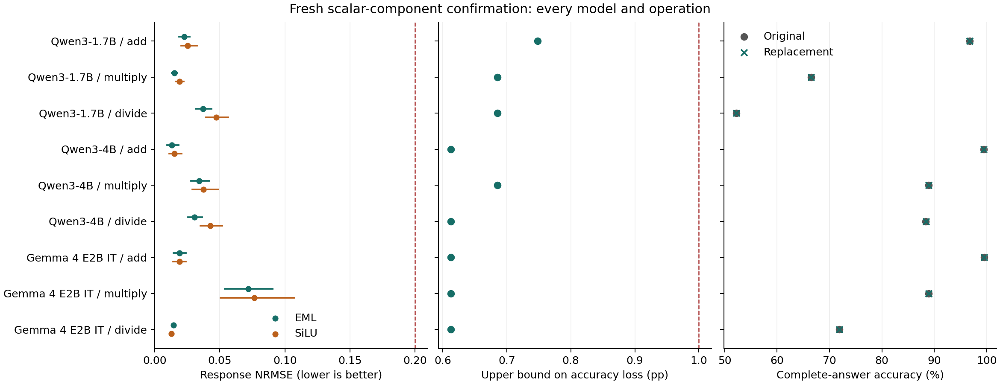

Component replacement evidence
All nine model/operation cells, including failed criteria and stress tests. Scalar replacement retains the original MLP's other contributions. Whole-block results are reported separately in REPORT.md.

Response intervals are adjusted across nine cells per metric. Stress and seed results do not redefine the primary criteria. Accuracy bounds assume independent operand groups and preserve dependence between prompt formats.
Full report · Summary data